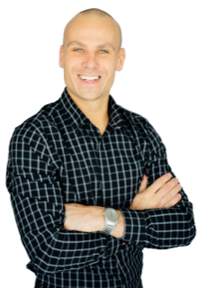

...a small group of people interested in the growth of hockey for all ages throughout the world. We LOVE our work and take pride in seeing any athlete improve and reach their goals.
Our mission is to connect with countless people and introduce them to the right, and of course the smartest, way to play the game of "Hockey" as well as to assist with their physical and mental preparation so they can compete against other well trained hockey players.
Radoslav Konecny has experience playing hockey at all levels from junior leagues to the professional ranks. He has played professionally in the USA, Canada, and Europe. Retired since 2018, "Coach Rad" was able to work with NHL players from the Boston Bruins, Florida Panthers, Pittsburgh Penguins, Montreal Canadiens among others, and KHL players from Europe and created good relationships through all these years.
He is active with the South Florida yout hockey. Currently Head Coach of Florida Panthers 14U"AA" team The Makos. In 19/20 season he was an assistant coach at South Florida Hockey Academy for U14 "AAA" team to Radek Dvorak and Ray Sheppard former NHL players. Working along the side with other former NHL players like Olli Jokinen, Tomas Vokoun, Jeff Chychrun, Sergei Krivokrasov, Alexei Ponikarovsky and John Madden.
Known for his physical fitness, integrity, drive for success, and personality, Radek will make it his personal goal to bring out the best in all campers
— both off and on the ice! "It's always amazing to see people work so hard and get what they deserve at the end."RK"